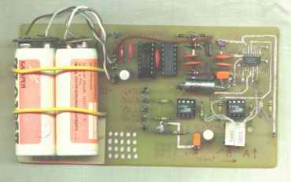
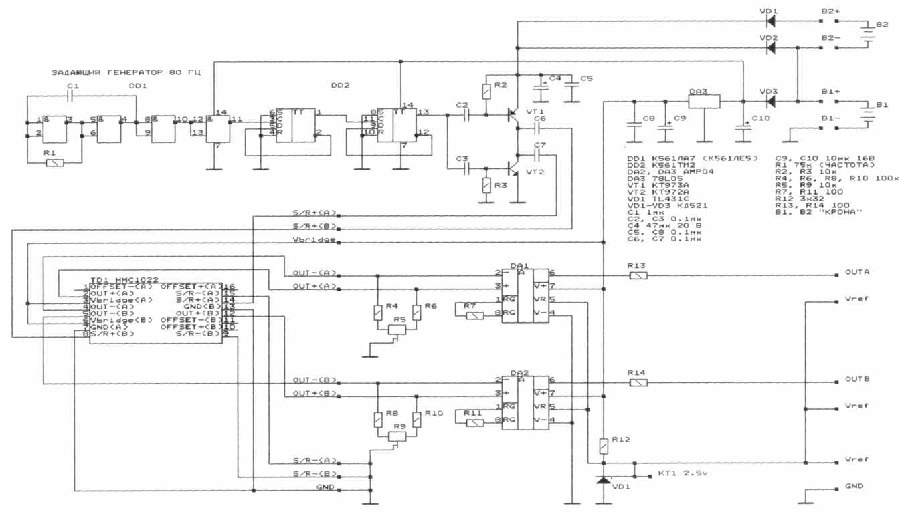

Первичный преобразователь детектора
возмущений магнитного поля Земли
Первичный преобразователь на основе магниторезистивного датчика использовался при разработке детектора возмущений магнитного поля Земли и пешеходного двухкоординатного магнитометра-градиентометра [3], которые могли бы применяться для поиска крупных предметов, обладающих ферромагнитными свойствами: трубопроводов, техники, свалок, кладов, а также при производстве дефектоскопических исследований. Совместный проект с лабораторией магнитоэлектроники Тверского государственного университета (руководитель - Гречишкин Р. М.).
Внешний вид макетной платы:

Технические данные:
Схема устройства:

Описание:
В качестве датчика магнитного поля использован двухкоординатный магниторезистивный преобразователь на микросхеме TD1 HMC1022 фирмы Honeywell [1]. Для работы этого датчика необходимы сигналы сброса/установки (импульсы тока амплитудой до 0.5 А длительностью около 1 мкс). Эти импульсы формируются следующим образом. На микросхеме DD1 К561ЛА7 (или К561ЛЕ5) собран генератор импульсов частотой около 80 Гц. Триггер DD2 (К561ТМ2) делит частоту импульсов на 4. С его выхода прямоугольные импульсы частотой 20 Гц и скважностью, равной 0.5, через дифференцирующие цепочки R2C2, R3C3 подаются на транзисторы VT1, VT2. Через конденсаторы C6, C7 импульсы сброса/установки подаются на соответствующие входы микросхемы TD1.
Выходные сигналы (пропорциональные составляющей индукции магнитного поля по соответствующей координате) с датчика TD1 подаются на дифференциальные входы усилителей DA1, DA2 (AMP04 фирмы Analog Devices). Для установки нулевого выходного сигнала в отсутствие магнитного поля используются цепочки R4R5R6, R8R9R10. Коэффициент усиления усилителей DA1, DA2 (около 1000) задается с помощью резисторов R7 и R11, соответственно. Через токоограничивающие резисторы R13, R14 сигналы поступают на выход преобразователя (OUTA, OUTB). Для работы усилителей от источника однополярного напряжения служит источник опорного напряжения Vref (~2.5 вольт) на элементах R12 (3.32 кОм) и VD1 (TL431C).
Питание схемы осуществляется от батареи B1 напряжением 9 вольт, которая подключается через защитный диод VD3. Питание генератора и узла формирования импульсов сброса/установки осуществляется нестабилизированным напряжением. Для стабилизации напряжения питания усилителей (5 вольт) служит стабилизатор напряжения DA3 (78L05). Батарея B2 может использоваться для увеличения амплитуды тока импульсов сброса/установки. Диоды VD2, VD3 выполняют при этом функции защиты и переключения.
Ссылки:
31.12.2003
29.07.2004
24.01.2006
17.06.2010
Альтернативные источники
энергии
Компьютеры и
Интернет
Магнитные поля
Механотронные системы
Перспективные
разработки
Электроника и технология